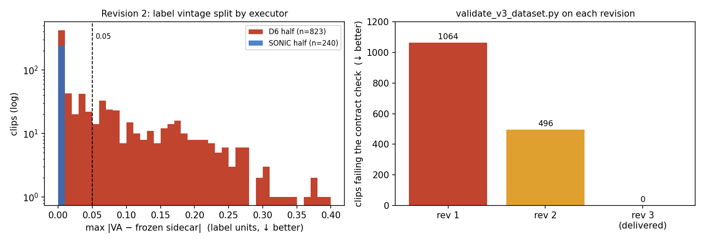

Generated from Markdown source: docs/report/2026-07-29-v3-rollout-dataset-schema-defects-and-delivery-verification.md
V3 rollout 数据集的字段缺陷、交付前核验与失效包络（revision 3）
Date/scale:
2026-07-29/ 1063 clip · 8 动作 · 两个执行器 · 5 个字段缺陷 · 4 路交付审计 Output profile:markdown-project-reportResults profile:dataset-verifierVerdict:PASS
已交付的 V3 数据集（revision 1）里有五处字段级缺陷，其中两处会让下游读到错的数值而任何既有检查都发现不了。本报告记录缺陷与修复、交付前核验，以及数据集本身的位置精度包络；筛选口径来自 三部分门与执行器分配报告，本次未改动。
1. Conclusion
PASS。
- Decisive evidence: 接受集与 revision 1 完全相同（1063 条，clip 名逐一相同），因为门只读
dof与参考轨迹，而这两者在新旧导出之间逐字节相同；五处缺陷全部修复并被落盘契约校验器确认（§3 判据表）。 - Counter-signal: 门不测世界坐标位置。walk 的世界系肢体偏差中位 0.116 m、最差 1.314 m；但同一批 clip 对齐骨盆后中位 0.044 m、全数据集最差也只有 0.128 m（§4 主表、图 2）。局部动作可信，全局轨迹最坏差一米以上，且这些 clip 是按设计入选的，不是漏网。
- Not shown: 未做端到端 planner 训练验证——本次修复不声称改善任何下游指标；
reference_body_pos_w是 anchor-relative 量，不是可复用的参考轨迹（§2）。 - Decision: 交付
..._rev3.tar.zst（sha2560162201916ec4b27…）；revision 1 与 2 标记作废，持有旧副本者需替换。消费世界坐标轨迹的下游须自行处理漂移。
2. Problem and terminology
研究问题：交付给下游 planner 训练的这份执行态数据集，其字段内容是否与它自己声明的契约一致；修复后筛选结论是否仍然成立；以及它的位置精度在最坏情况下能差到多少。
| Term | Operational definition in this report | Scope / not to confuse with |
|---|---|---|
| accepted set | 通过三部分门（抖动 / 运动量 / 相位）的 clip 集合，本次沿用既有口径未改动 | 不是"人工验收通过"；人工只做抽检浏览 |
| gate-relevant field | 门实际读取的字段：执行态 dof 与参考树的 joint_pos。其余字段变化不影响筛选结果 |
与"下游会读的字段"不同，后者由 planner loader 决定 |
| revision 1 / 2 / 3 | 同一数据集的三次构建。1 已交付；2 打包后审计不通过、从未交付；3 为当前交付版 | 不是数据集代际 V1/V2/V3 |
| 世界系肢体偏差 | 双脚 + 双腕四点，执行与参考同帧世界坐标欧氏距离，逐 clip 取时间中位后按动作聚合。单位 m，↓ 更好 | 包含根部漂移；与门读的关节量无关 |
| 对齐骨盆后偏差 | 同上四点，但两侧各减去各自骨盆位置后再比。两者之差即累积漂移 | 不是去掉了误差，而是把"全局位置错"与"肢体动作错"拆开 |
| 参考侧 stressor | 难度只从参考轨迹取：末端峰值速度（p99）、参考关节速度 8–25 Hz 能量、clip 平均 arousal | 从执行态取会循环论证——抖的执行既高频又误差大 |
reference_body_pos_w |
采集环境每步相对机器人当前 anchor 重算的参考体位，仅 D6 半边有 | 不是可复用的参考轨迹；它是执行态的闭式函数，无法为另一执行器重建 |
| contract check | scripts/validate_v3_dataset.py：读数据集自带 data_contract.json 的必需字段与声明源，逐 clip 核对内容不变量；检查了 0 个文件显式判为失败 |
与导出期的 validate_vadcompose_50hz_phc.py 不同，后者只作用于导出 manifest |
3. Method
| Axis | Setting |
|---|---|
| 输入（D6，六个上肢动作） | outputs/plan50_bm_tracker_filter/d6_gtrxl_rollouts_v3_reffix（修复后重导出，1384 条） |
| 输入（SONIC，kick/walk） | v3_sonic_raw（train）+ eval_sonic_bare_vs_d6/raw（val/test） |
| 参考树 | data/processed/vadcompose_v2_unilab_npz，本次未改动 |
| VA 标签源 | vadcompose_v2_unilab_npz/va_sidecars，契约中声明为 schema.va_label_source |
| 落盘方式 | 逐条拷贝（revision 1 为符号链接） |
| 门 | 沿用既有三部分门，阈值与执行器分配均未改动 |
| 位置偏差口径 | 全部 1063 条，逐 clip 时间中位 → 按动作取中位 / p90 / 最大，无抽样 |
| Criterion | Threshold | Measured | Verdict |
|---|---|---|---|
| 接受集不变 | clip 名集合与 revision 1 完全相同 | 1063 == 1063，集合相等 | PASS |
| 门输入未被改动 | 门读取的字段逐字节相同 | 1384 条 × 21 字段中 20 个字节相同；门重放两边均 823 条通过，对称差 0 | PASS |
| 无冻结参考 | 冻结 clip 数 = 0 | 0 / 1063 | PASS |
| 核心字段齐备且约定统一 | 16 项必需字段全有；root_rot == root_quat_wxyz 置换 |
1063 / 1063 | PASS |
| 单一 VA 版本 | 与声明源偏差 = 0 的 clip 数 = 全部 | 1063 / 1063 | PASS |
| 校验器非空转 | 同一校验器在旧版本上须报失败 | revision 1 报 1064 处、revision 2 报 496 处 | PASS |
| 交付字节可核验 | 解包后重验通过 | ok=true，1063 条，0 失败 |
PASS |
Run Spec 状态
NOT PREREGISTERED — no confirmed Run Spec found after searching: docs/plans/（无 v3 重建或交付相关条目）、outputs/plan50_bm_tracker_filter/（仅有执行脚本 rerun_v3_reffix.sh，非确认版 spec）、既有 V3 报告的 Run Spec 段。
本次为对既有产物的纠错重建 + 交付核验，沿用已确认的门与执行器分配，未引入新的实验设计或新阈值。§4 的位置偏差与 stressor 分析同样是事后测量，不是预注册判据；筛选口径的确认版 Run Spec 见既有 V3 报告。
4. Results
主表 — 逐动作构成与位置偏差（全部 1063 条）
| 动作 | clip 数 | 执行器 | 世界系 中位 (m ↓) | 世界系 p90 (m ↓) | 世界系 最大 (m ↓) | 对齐骨盆 中位 (m ↓) | 对齐骨盆 最大 (m ↓) |
|---|---|---|---|---|---|---|---|
| walk | 173 | SONIC | 0.116 | 0.271 | 1.314 | 0.044 | 0.120 |
| kick | 67 | SONIC | 0.092 | 0.205 | 0.345 | 0.057 | 0.128 |
| punch | 113 | D6 | 0.044 | 0.110 | 0.181 | 0.040 | 0.105 |
| crouch | 35 | D6 | 0.042 | 0.080 | 0.100 | 0.047 | 0.120 |
| cross_arms | 170 | D6 | 0.034 | 0.044 | 0.113 | 0.040 | 0.105 |
| clap | 148 | D6 | 0.031 | 0.048 | 0.096 | 0.043 | 0.105 |
| wave_arms | 175 | D6 | 0.030 | 0.047 | 0.131 | 0.033 | 0.089 |
| handshake | 182 | D6 | 0.029 | 0.049 | 0.150 | 0.033 | 0.102 |
世界系最大值与最小的动作中位相差 45 倍（0.029 → 1.314），对齐骨盆后全部收敛到 0.033–0.128 m。两个 locomotion 动作的世界系中位是上肢动作的 3–4 倍，对齐后基本持平。

图 1（校验）：左，revision 2 中每条 clip 的 VA 与冻结 sidecar 的最大偏差，按执行器分色，纵轴对数——SONIC 半边全部落在 0，D6 半边 496 条非零、275 条超过 0.05。右，同一契约校验器在三个版本上报出的失败 clip 数。

图 2（失效切片）：左，每个动作两根条形——世界系与对齐骨盆后，两者之差即累积根部漂移，条形重合的动作没有漂移问题。右，三条 clip 的逐帧世界系偏差：典型 walk、数据集内最差 walk、最差 wave_arms。右图 clip 按结果选取（该动作世界系偏差最大者），这正是包络图的用途。
代表性 rollout
val/00016_walk_val_1174_0_0_40（walk，SONIC 执行，98 帧 @50Hz），叠加蓝色半透明参考。同一轨迹关闭参考的版本为 rollout_exec_only.mp4；数据集只存执行态，参考不入库。
5. Analysis
- Finding：接受集不变，是因为门读取的输入没被改动，不是因为改动小。 门只消费执行态
dof与参考树joint_pos；两次导出在这些字段上逐字节相同，门重放两边同为 823 条通过、对称差 0（§3 判据表第 2 行）。既有报告的过门率、逐动作数字与人工验收结论继续成立；frame_mpjpe_m亦逐字节相同，已记录的 MPJPE 与 SR 数字不受影响。 - Finding：失效模式只有一种——全局漂移，且只出现在 locomotion。 世界系偏差跨动作相差 45 倍，对齐骨盆后全部落进 0.033–0.128 m（主表）。最差那条 walk 世界系 1.314 m、对齐后 0.105 m：参考走出去再折返，执行没折返到位，而步态本身跟得住（图 2 右）。上肢动作即使取最差 clip 也只到 0.096–0.181 m。把相对偏差按各动作参考自身的活动幅度归一后为 7.8%–18.7%，locomotion 落在较好的一端（walk 9.2%），即根部漂移不牵连相对动作质量（表 A3）。
- Working interpretation（待验证）：难度指标解释不了这些偏差，动作类型才能。 三个参考侧 stressor 与漂移的合并秩相关为 0.44 / 0.57 / 0.39，按动作分组后平均降到 0.19 / 0.24 / 0.16；对肢体偏差更彻底，动作内平均 0.08 / 0.07 / −0.00，且符号在动作间翻转。arousal 对肢体偏差的动作内相关正好为 0，说明它是动作类型的代理变量，不是独立难度轴（表 A3）。
- Next：把契约回读固化进流程，并给下游一个明确口径。
scripts/validate_v3_dataset.py已接入本次交付，后续数据集构建打包前须先通过它。消费相对姿态的下游可直接使用；消费世界坐标轨迹的须自行处理漂移，或按主表 p90 列设阈值筛选。同族导出outputs/plan50_bm_tracker_filter/d7_gtrxl_rollouts（1177 条）仍 100% 携带冻结参考且无 validation 记录，未喂任何已交付数据集，是否重导出待定。
6. Appendix
表 A1 — 五处缺陷、影响范围与修复
| 缺陷 | 影响范围 | 为什么既有检查看不见 | 修复 |
|---|---|---|---|
reference_body_pos_w 每帧存同一姿态 |
823 条（D6 半边全部） | 字段存在、形状正确、数值有限，形状检查全过 | 改用修复后的重导出，0/1384 冻结 |
root_rot 两半边两种四元数约定 |
全部 1063 条 | 置换后的单位四元数模长仍为 1 | SONIC 侧改写为 xyzw；root_quat_wxyz 补齐到每条 clip |
| VA 标签混两个插值版本 | 496 / 823 条 D6（275 条偏差 > 0.05，最大 0.394） | 无任何检查拿契约声明的源头核对内容 | 全部 1063 条统一盖 sidecar 版本 |
reference_frame_index 从 1 起数 |
240 条（SONIC 半边全部） | 契约只写字段名，未写取值范围 | 转换时改为 0 起，并加保护避免二次偏移 |
fps dtype 两半边不同 |
全部 | 同上 | 统一 int64 |
表 A2 — 契约校验器在三个版本上的结果
| Revision | clip 数 | 失败 clip | 主要失败原因 | 状态 |
|---|---|---|---|---|
| 1 | 1063 | 1064 | 缺 root_quat_wxyz、帧索引违约、四元数键不一致、fps dtype 不统一 |
已交付，作废 |
| 2 | 1063 | 496 | VA 与声明源不符 | 未交付，作废 |
| 3 | 1063 | 0 | — | 交付 |
失败数 1064 大于 clip 数，因为其中一条为数据集级失败（fps dtype 不统一），不归属单条 clip。
表 A3 — 参考侧 stressor 与偏差的秩相关
三个 stressor 全部只从参考轨迹计算：末端峰值速度（四个末端点相对骨盆速度的逐帧最大值取 p99）、参考关节速度的 8–25 Hz 带通能量 RMS、clip 平均 arousal。
| stressor | → 根漂移（合并 / 动作内均值） | → 对齐骨盆后肢体偏差（合并 / 动作内均值） |
|---|---|---|
| 末端峰值速度 | 0.44 / 0.19 | 0.22 / 0.08 |
| 参考高频能量 | 0.57 / 0.24 | 0.27 / 0.07 |
| clip 平均 arousal | 0.39 / 0.16 | 0.14 / −0.00 |
动作内相关很不均匀：漂移侧 crouch 0.44–0.56、punch 0.31–0.40，而 cross_arms 与 kick 接近 0；肢体偏差侧符号在动作间翻转（clap 对高频为 −0.44，walk 为 +0.44）。合并口径不消动作身份这个混淆项，动作内口径消掉，两者结论不同时以后者为准。
归一化后的相对偏差与根部朝向误差（同一批 1063 条）：
| 动作 | 相对偏差 / 参考活动幅度 | 根部 yaw 误差 中位 (°) | 末帧 (°) |
|---|---|---|---|
| clap | 18.7% | 1.9 | 1.6 |
| crouch | 14.2% | 2.9 | 3.5 |
| handshake | 11.7% | 1.4 | 1.6 |
| kick | 11.2% | 5.4 | 9.4 |
| cross_arms | 11.0% | 3.1 | 1.7 |
| walk | 9.2% | 4.5 | 7.2 |
| wave_arms | 9.1% | 2.3 | 2.1 |
| punch | 7.8% | 2.5 | 2.8 |
绝对相对偏差跨动作只差 1.7 倍（0.033–0.057 m），而各动作参考自身的活动幅度差 2.2 倍（0.229–0.506 m），故归一化后的排序与绝对值不同。locomotion 的根部 yaw 误差是上肢动作的 2–3 倍，朝向偏差乘以行程会放大成位置漂移（7.2° × 2 m ≈ 0.25 m，与 walk 根漂移中位 0.185 m 同量级）；本报告未做逐 clip 归因，此处仅为量级对照，不是分解结论。
逐时轨迹图（四张，含 stress 选取）
按"该动作已入选 clip 中门指标最接近中位、时长 4–10 秒"自动选取的典型 clip：


按参考侧 stressor 取该时长窗口内最极端的 clip：


四行分别为：根部世界坐标（高度与水平行程）、双脚相对骨盆高度、双腕相对骨盆高度、逐帧世界系偏差。根部画世界坐标是因为全局漂移是真实失效模式，画成相对坐标会按定义把它抹掉；肢体画相对骨盆是为了不让根部漂移渗进每条曲线。
时长窗口是绘图约束不是质量筛选，故这四张图里的"最极端"是窗口内的极端，与主表最大值列不是同一条 clip。
body 索引两边不通用：执行态存 14 个 tracked body（src/VAD_base_model/geometry/g1_fk.py 的 TRACKED_BODIES），参考树保留 MuJoCo 全量并把 world 留在 index 0，故 pelvis 为 1。配对由平均世界距离核验，落在 0.05–0.07 m 的跟踪误差量级，而非配错会产生的米级。
选取规则与逐 body 偏差见 assets/traces*.json。
交付物与作废物
| 文件 | 大小 | 说明 |
|---|---|---|
data/Tracked_Cleaned_VADCompose_V3_planner50hz_rev3.tar.zst |
631,291,053 B | 交付。sha256 0162201916ec4b27694def77db002329ede4f15a9d9f5199575cfcc0d0b04670 |
..._rev2_SUPERSEDED.tar.zst |
631,253,913 B | 从未交付（VA 混版本） |
..._rev1_SUPERSEDED.tar.zst |
563,536,164 B | 2026-07-26 构建，已交付过；冻结参考 + 缺 root_quat_wxyz |
不解包识别版本：读包内 data_contract.json 的 revision 字段；或检查任一 clip 是否含 root_quat_wxyz（revision 1 无）。
Split 构成：train 850 / val 103 / test 110。执行器特有字段按契约 per_executor_optional_fields 声明保留，不为另一半边伪造——D6 专有六项 body_ang_vel_w、body_quat_wxyz、contact_points、frame_mpjpe_m、policy_action、reference_body_pos_w；SONIC 专有两项 derived_fields、executor。
头条数字的重算方式
接受集相同（1063 == 1063）
uv run python -c "
from pathlib import Path
a={p.name for p in Path('data/processed/Tracked_Cleaned_VADCompose_V3_planner50hz').glob('*/*.npz')}
b={p.name for p in Path('data/processed/Tracked_Cleaned_VADCompose_V3_planner50hz_rev1_SUPERSEDED').glob('*/*.npz')}
print(len(a), len(b), a==b)"
契约校验（revision 3 → 0 失败）
uv run python scripts/validate_v3_dataset.py \
--dataset data/processed/Tracked_Cleaned_VADCompose_V3_planner50hz
主表与图 2
uv run python scripts/plot_v3_failure_slice.py
单条 clip 的世界系偏差 = 双脚双腕四点 ‖执行 − 参考‖ 的逐帧均值再取时间中位；对齐骨盆后 = 同式但两侧各减去各自骨盆位置。逐动作数字落盘于 assets/per_action_deviation.json 与 fig2_failure_slice.json。
VA 偏差 496 / 275 / 0.394：对 revision 2 的每条 clip 取 max(|valence − sidecar|, |arousal − sidecar|)，sidecar 按 clip 帧数截断或边缘补齐后比较。统计落盘于 assets/va_deviation_stats.json。
Evidence and commands
- 重建与审计证据：
outputs/plan1_bm_composite_tracker/v3_rev2_rebuild_evidence.json（含revision_3_addendum） - 契约校验报告：
outputs/plan1_bm_composite_tracker/v3_rev3_dataset_validation.json - 构建记录（逐 clip 门指标与拒因）：
outputs/plan1_bm_composite_tracker/v3_build_report.json - 数据契约：数据集目录内
data_contract.json - 位置偏差与包络：
docs/report/assets/{per_action_deviation,fig2_failure_slice,traces*}.json
构建命令：
uv run python scripts/build_v3_rollout_dataset.py
# 默认 --d6-rollouts 指向修复后的重导出，--revision 3，非 --link-d6（逐条拷贝）
Source code
- 构建：
scripts/build_v3_rollout_dataset.py（materialize_clip执行三项归一化：补root_quat_wxyz、统一 fps dtype、重盖 VA 标签） - SONIC schema 转换：
scripts/sonic_raw_to_v2_schema.py（四元数约定与帧索引起点在此修正） - 契约校验：
scripts/validate_v3_dataset.py - 导出期校验：
scripts/validate_vadcompose_50hz_phc.py（新增冻结参考内容检查与vacuous判定） - 逐时轨迹与 stressor：
scripts/plot_v3_endeffector_traces.py（--select median|fast-ee|high-hf|high-arousal） - 失效切片：
scripts/plot_v3_failure_slice.py
与既有报告的关系
本报告不推翻 2026-07-26 三部分门与执行器分配报告。 该报告的主题是筛选口径的设计与依据，其全部数字与结论在本次重建后继续成立（§5 第一条）。本报告负责数据集文件本身的缺陷、修复、交付核验与位置精度包络。